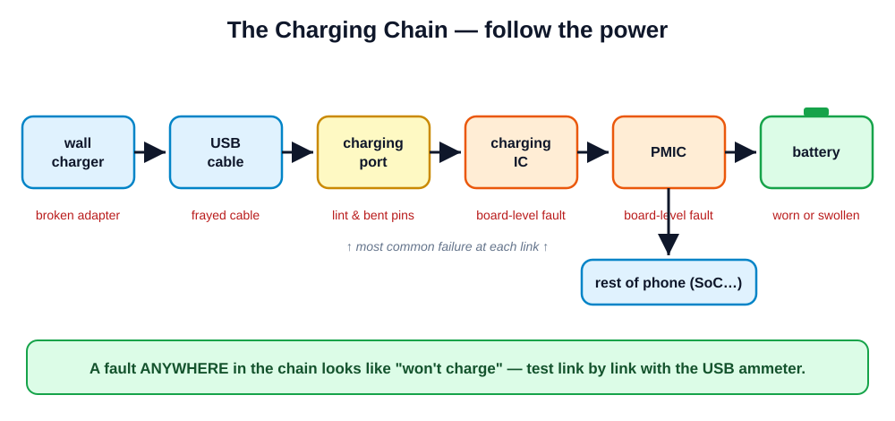

Cellphone Repair Course · Module 5 of 10
Battery & Power Issues
The most-requested repair after screens — and the most dangerous part in the phone.
1.5 h theory · 3 h practical · quiz
Open with the random safety-rule recital (two students). Then ask: "Whose phone battery lasts less than a day?" — several hands will go up. Tell them by the end of today they can fix that, safely, and diagnose a phone that won't turn on at all.
What you'll be able to do after today
- Explain how a lithium-ion battery works, ages, and fails
- Read battery health on iOS and Android
- Remove and replace a glued-in battery without bending or prying it
- Diagnose a "won't charge" / "won't turn on" phone step by step
- Know exactly when a power fault is a board-level job to refer out
Emphasize the diagnosis half: battery swaps pay the bills, but the tech who can tell a customer WHY their phone is dead — in five minutes, with a meter — is the one who earns trust and referrals.
Li-ion basics: the numbers that matter
| State | Voltage | Meaning |
|---|
| Fully charged | ~4.4 V (older cells ~4.2 V) | Top of the safe range |
| Nominal (label) | 3.7–3.85 V | The "average" voltage printed on the cell |
| Empty (phone shuts off) | ~3.0–3.4 V | Software cutoff protects the cell |
| Dead-flat | < 3.0 V | Deep discharge — may never recover |
Capacity is measured in mAh (milliamp-hours) — how much charge the cell holds. More mAh = longer runtime, same voltage.
Hold up a real battery and read the label aloud: nominal voltage and mAh. Analogy: voltage is water pressure, mAh is the size of the tank. The dead-flat row matters for the shop: a phone left in a drawer for a year often has a battery below 3.0 V that no charger will revive — that's a battery sale, not a board fault.
Wear = cycles
- One cycle = using 100% of capacity (two half-discharges count as one)
- Typical cell: ~500 full cycles before it drops to ~80% of original capacity
- Heavy user ≈ 1 cycle/day → noticeable wear in 18–24 months
- Heat and staying at 0% or 100% for long periods accelerate aging
This is why battery replacement is a routine, recurring repair — every phone needs one eventually. It's the closest thing this trade has to guaranteed demand.
Ask the class to estimate their own phone's age and cycles. Key concept: wear is chemistry, not a defect — capacity fades even with perfect care. Frame the 80%-at-500-cycles number as a rule of thumb, not a law; some cells do better, hot climates do worse.
Symptoms of a worn battery
- Fast drain — full to empty in half the time it used to take
- Sudden shutdowns — dies at 20–40%, especially under load (camera, games) or in the cold
- Percentage jumping — 60% → 15% → dead, or stuck at one number
- Slow charging / getting hot while charging
- Swelling — screen or back cover lifting (next slide)
Explain WHY shutdowns happen under load and cold: a worn cell's internal resistance rises, so voltage sags under heavy current draw — the phone sees the voltage dip below cutoff and kills itself even though "charge" remains. Percentage jumping is the fuel gauge losing track of a shrunken tank.
Swelling: stop everything

A swollen battery is one puncture away from fire. Module 1 rules apply in full: glasses on, never pry/bend/puncture, no heat near it, and it goes in the battery bin — never the normal trash.
Revisit the Module 1 diagram: swelling is gas from decomposing electrolyte — the cell is already failing internally. A pushed-up screen is often the customer's first clue. Shop rule: a swollen battery jumps the queue — deal with it the day it arrives, don't leave it in a drawer. Show the sealed demo battery again if you have it.
Checking battery health
iOS
Settings → Battery → Battery Health. "Maximum Capacity" below ~80% = replacement territory. Check for the "service" warning.
Android
No universal built-in screen. Use dial codes (e.g. *#*#4636#*#* on some models), manufacturer service menus, or apps like AccuBattery that measure over a few days.
Battery health explained — how to read it on both platforms — Video 5.3 in resources/videos.md
Demo live on both a training iPhone and Android. Warn them: Android third-party apps ESTIMATE by watching charge sessions, so a fresh install shows garbage for the first days. Also note: after a non-genuine battery swap, some iPhones show "Unknown Part" and hide the health % — set that expectation with customers BEFORE the repair.
Safe removal — rule zero
Disconnect first. Always.
- Power the phone off, open it (Module 3 skills)
- Disconnect the battery connector before touching anything else
- Remove any brackets, flexes, or boards lying over the battery
- Only then start on the adhesive
A connected battery turns every slip into a possible short circuit — and a shorted battery makes its own heat.
Connect back to Module 1 rule 2. Ask: "Why disconnect even though the phone is off?" — 'off' phones still have live power rails; a dropped screw or tweezer tip across the wrong pads can short them. Demonstrate a clean spudger lift of the connector: pry under the connector, never against the socket.
Adhesive pull-tabs: low and slow
- Most batteries sit on stretch-release adhesive strips with pull-tabs
- Free the tab end with tweezers, grip it flat against the frame
- Pull LOW — almost parallel to the phone body, not upward
- Pull SLOW — steady stretch, pausing lets the glue keep releasing
- The strip stretches to several times its length before it lets go — be patient
Demo with a real pull-tab or a strip of stretch-release adhesive stuck to the bench. Pulling upward or fast is what snaps tabs — the strip needs to stretch, not tear. Have students chant it back: "low and slow." A snapped tab costs ten minutes; a patient pull costs thirty seconds.
When the tab snaps
- Drip a little IPA (≥99%) along the battery edge; give it a minute to creep under
- Slide a thin plastic card behind the battery from the freed corner
- Work it across gently — more IPA, more patience
NEVER metal behind or under a battery — one scratch through the pouch = fire.
NEVER bend the battery. If it flexes, stop and free more adhesive first.
This is the highest-risk moment of the whole repair — say so explicitly. Gentle heat on the BACK of the phone (heating pad) can also soften glue, but never aim heat at the battery itself. If a battery is damaged during removal it goes straight to the battery bin and the customer gets a new one regardless — that's the cost of the trade, not a corner to cut.
Watch the full job
Battery replacement walkthrough, start to finish — Video 5.1 in resources/videos.md
Watch for:
- The exact moment the battery is disconnected — what came before it?
- The angle and speed of every pull-tab stretch
- What the tech does when a tab snaps mid-pull
Pause the video at the disconnect and at the first pull-tab. Ask the class to call out mistakes if the tech does anything differently from what we just taught — small technique variations are fine, safety violations are not. This primes them for the practical.
Fitting the new battery
- Clean old adhesive residue off the well with IPA; let it dry fully
- Compare old vs new: connector type, size, capacity must match
- Apply new stretch-release strips or pre-cut adhesive to the well (not the battery), peel, and seat the battery once — no repositioning
- Route the flex naturally; connect the battery last, after all other flexes
Never force a battery into its well, and never press hard on its face to seat it. Firm, even, gentle.
"Connect last" mirrors "disconnect first" — the battery is always the last thing live. Show why repositioning matters: stretch adhesive grabs instantly and repositioning means bending the battery to get it back out. Also mention checking the new cell's voltage with a multimeter before fitting — a new battery reading near 0 V is DOA, send it back.
Post-repair testing: prove it
- Charge test — plug in through the USB ammeter: current should be normal for the model (roughly 1–2 A fast-charging)
- Health reading — new battery should report at or near 100% (where the OS shows it)
- Load test — run camera + flashlight for a few minutes: no random shutdown, no rapid % drop, no unusual heat
- Charge to full once before return; note the ammeter reading on the job sheet
The camera+flashlight combo is the poor man's load tester — it pulls high current and exposes a bad cell or a bad connection immediately. Drill the habit: readings get WRITTEN DOWN on the job sheet. "Tested OK" with numbers behind it wins every warranty argument.
The charging chain

Wall charger → cable → port → charging IC → PMIC → battery
Walk the diagram link by link and explain each part's job in one sentence: charger converts mains to USB power, cable carries it, port connects it, charging IC manages safe charge current, PMIC (power management IC) distributes power to the whole board, battery stores it. Every student should be able to redraw this chain from memory — it IS the diagnosis map for the next slides.
Why "won't charge" tells you almost nothing
A fault at any link of the chain produces the same customer complaint:
| Faulty link | Typical cause | Fix level |
|---|
| Wall charger | Dead adapter | Swap — trivial |
| Cable | Broken cores near the plug | Swap — trivial |
| Port | Lint, corrosion, worn pins | Clean / replace — Module 6 |
| Charging IC / PMIC | Board-level failure | Refer out |
| Battery | Dead-flat or worn cell | Replace — today |
This is the core mental model of the module. The amateur replaces the port because "it won't charge"; the professional tests the chain from cheapest link to most expensive and only touches what's proven faulty. Ask: "Which two links can the customer have already ruled out for you at home?" — charger and cable, IF they tested with known-good ones (they usually haven't).
No-power diagnosis flow
- Visual inspection — liquid indicators, corrosion, bent port pins, swelling, drop damage
- Battery voltage with the multimeter — at the connector: <3.0 V = deep-discharged; ~0 V = dead cell or board short
- Known-good battery — swap one in: phone boots = battery fault confirmed; still dead = look at board/port
- USB ammeter on a known-good charger and cable — read the current (next slide)
Order matters: each step is cheaper and faster than the one after it. Steps 2 and 3 are why the shop keeps a small library of known-good batteries for common models — a 30-second swap answers what an hour of guessing can't. Demo measuring voltage on a battery's connector pins: outermost pins are usually + and −, mind the probe tips don't bridge pins.
Reading the USB ammeter
| Reading | Most likely meaning | Next step |
|---|
| 0 mA | No connection — port fault or board fault | Inspect/clean port; then suspect board |
| Low & steady (e.g. 50–200 mA) | Charging, but slowly — dirty port, weak contact, or trickle-charging a dead-flat cell | Clean port; give a dead-flat cell 15–30 min, then re-read |
| Normal (~1–2 A) | Chain is fine — problem is battery or software | Battery health check; software checks (Module 9) |
One plug, one number, and half the chain is ruled in or out. The ammeter is the best €10 in your kit.
Insist on known-good charger + cable for every reading — otherwise the meter is measuring THEIR fault, not the phone's. Mention erratic/jumping readings as a fourth pattern: usually a loose or worn port. Numbers vary by model and charge level; teach patterns, not exact figures.
"Dead" phones come in three flavours
| Flavour | Clues | Suspect |
|---|
| No power | No vibration, no ring when called, no sounds, 0 response | Battery, port, board |
| No display | It vibrates or rings, makes sounds, gets warm — but screen stays black | Screen or screen connector (Module 4) |
| Boot-loop | Logo appears, restarts endlessly | Software (Module 9) or failing power under load |
First question at intake: "Does it vibrate or ring?"
This one question, asked at the counter, saves opening the wrong phone. Have someone call the "dead" phone; plug it in and listen for the charge sound; feel for vibration. A "dead" phone that rings needs a screen, not a battery — completely different quote. Boot-loops that only happen off-charger point back at a worn battery sagging under boot load.
Watch a real diagnosis
Diagnosing a phone that won't power on — Video 5.2 in resources/videos.md
As you watch, track:
- Which step of our flow is the tech on at each moment?
- What did each measurement rule out?
- Where would YOU have stopped and quoted the customer?
Pause after each measurement in the video and make the class name the step from slide 16 and say what's been eliminated. The goal is that they see diagnosis as a checklist that converges, not guesswork. Afterwards, map the video's finding onto the charging-chain diagram.
When to refer out
- Known-good battery + clean port + known-good charger and cable, and still 0 mA / no boot
- Signs of board damage: burnt smell, hot spot on the board, liquid damage history
- Suspected charging IC or PMIC failure — these are micro-soldering jobs
Referring out is not failure — it's a correct diagnosis. Charge for the diagnosis, partner with a board-level specialist, and the customer still leaves happy.
Preview Module 7: they'll learn soldering fundamentals, but IC-level work needs equipment and months of practice beyond this course. A tech who says "this is board-level, here's who can do it, here's what it'll roughly cost" sounds MORE professional than one who tinkers for a week. Encourage them to find their local board-repair partner early.
Battery myths — bust them for your customers
| Myth | Truth |
|---|
| "Overnight charging ruins the battery" | Modern phones stop at full and manage it — fine. Heat is the real enemy. |
| "You must calibrate by full drain/charge" | Mostly obsolete; occasionally helps a confused % gauge, never restores capacity. |
| "Put a wet phone in rice" | Never. Rice does nothing; corrosion keeps eating. Proper treatment: Module 8. |
Customers repeat these myths daily; a tech who corrects them kindly, with reasons, builds authority. The rice myth is the important one — every day in rice is a day of corrosion. Tease Module 8: "You'll see what rice-treated boards look like inside. Bring your appetite for horror."
Teach-back time
- One volunteer: talk us through safe battery removal, from opening the phone to the battery leaving the well
- Another volunteer: a phone "won't charge" — walk the class through your diagnosis flow and what each ammeter reading means
Class: listen for anything missed — you're the reviewers.
Listen specifically for "disconnect first" and "low and slow" in the first teach-back, and for cheapest-link-first ordering in the second. If either is missing, don't supply it yourself — ask the class "what's missing?" first. Re-demo weak areas before releasing them to stations.
Practical: 3 hours at the bench
| Station | Task |
|---|
| A | Full battery replacement on a donor phone — disconnect first, pull-tabs low & slow, fit, adhesive, retest |
| B | No-power diagnosis: planted-fault phones (dead battery / bad cable / dirty port) — find the fault, prove it with measurements |
| C | Document USB ammeter readings before and after every fix on the job sheet |
Worksheet: practicals/practical-05-battery-power.md
Plant the faults before class and keep a key of which phone has what — don't tell students. Rubric: safety handling of the battery is pass/fail (metal near a battery = automatic station fail, restart). At station B, require the written measurement that PROVES their diagnosis before they may fix it.
Before next session
- Redraw the charging chain from memory and label what each link's failure looks like
- Check battery health on your own phone and one family member's — bring the numbers
- Watch Video 6.1 (charging port diagnosis & cleaning) before next session
- Quiz now: Module 5, 10 questions
Next: Module 6 — ports, buttons & the small parts that pay.
Hand out the quiz from assessments/module-quizzes.md; do bench inspections while they write. The homework health readings become the opening discussion of Module 6. Tease next session: "Most 'broken' charging ports aren't broken at all — bring your curiosity."
1 / 24
→/← slides · N notes · F fullscreen · Home/End jump